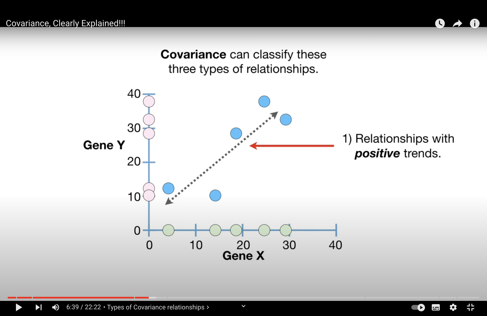
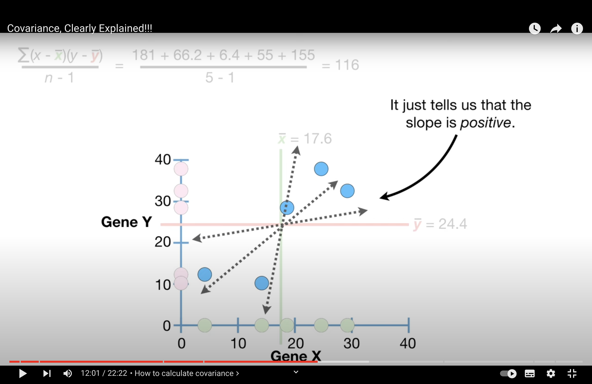
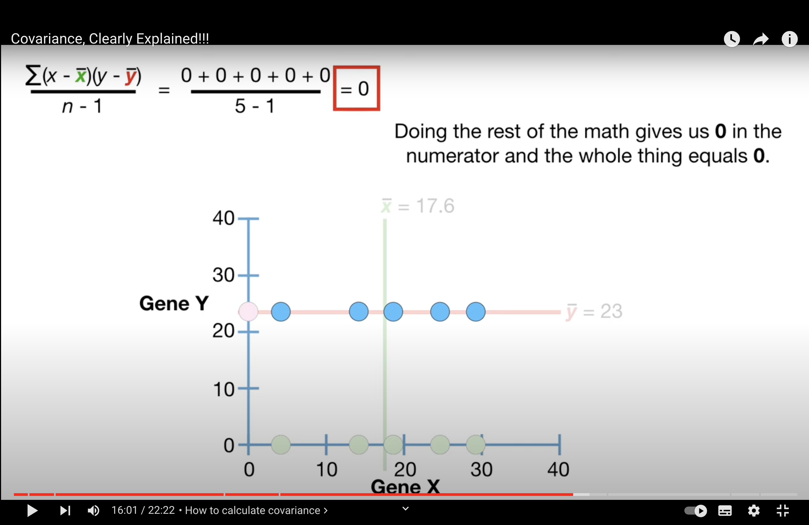
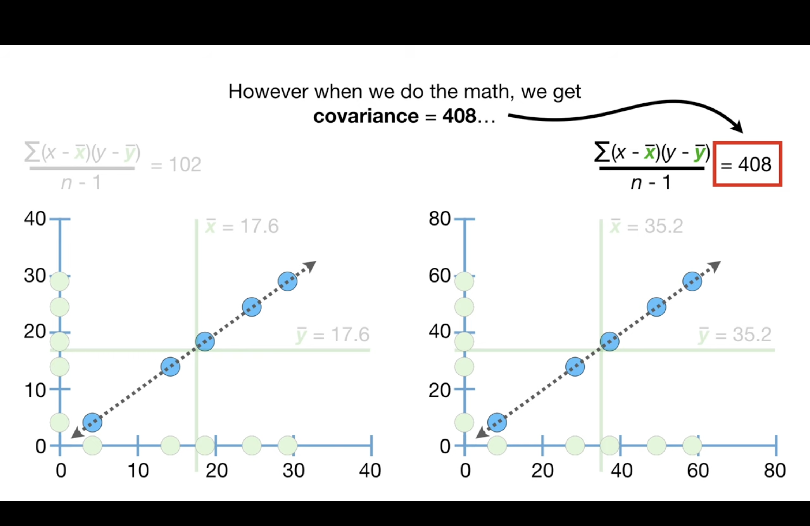

review1#
Covariance#
Main Idea#
main idea 1: covariance can describe 3 relationship of a variable:
Positive: They increase together.
Negative: As one increases, the other decreases.
None: No apparent trend.
an example can be: gen X and gen Y in a cell (or number of green apple and red apple sold in a store, and compare different stores, will there be any additional information we can observe from looking from a pair of red and green apples?)
{kind=link}
main idea 2: Covariance is a computational stepping stone to something that is interesting, like correlation.
Calculation#
{kind=link}
Covariance doesn’t tell us if the slope is steep or not. And, more importantly, covariance doesn’t tell us if the points are relatively close the line…
{kind=link}
When there is no trend, cov = 0
Interpretability of Cov#
Cov is sensitive to the scale of data and this makes them difficult to interpret. As shown below, although the data exhibits the exactly same trend, the scale is different and the cov is different.
{kind=link}
The sensitivity to scale also prevents the covariance value from telling us if the data are close to the dotted line that represents the relationship…
Is this the main reason we are doing centralization for PCA??
Covariance’s sensitivity to the scale of data is indeed one of the reasons we perform centering (and often scaling) of data when conducting Principal Component Analysis (PCA). Centering the data by subtracting the mean from each data point ensures that the PCA treats each variable equally in terms of its variance. Here’s a more concise explanation:
Covariance and Scaling:
Covariance is scale-dependent, meaning it changes when the scale of data changes, even if the relationship between variables stays the same. This scale sensitivity can make interpretation difficult because the covariance value won’t directly indicate the tightness of data around the trend line.
PCA and Centering:
In PCA, centering the data (subtracting the mean) is crucial because it:
Ensures that each variable contributes based on its variance, not its scale.
Moves the dataset to be around the origin in the multidimensional space, which is necessary for PCA to identify the directions of maximum variance (principal components).
Scaling, which involves standardizing the range of the variables, may also be performed in PCA to prevent variables with larger scales from dominating the principal components.
Covariance plays a central role in Principal Component Analysis (PCA), a dimensionality reduction technique often used in data analysis and machine learning. Here’s the connection:
Covariance and PCA:
PCA seeks to reduce the dimensionality of a dataset while retaining as much variance as possible. It does this by finding new, uncorrelated variables called principal components, which are linear combinations of the original variables. The principal components are ordered so that they capture successively less variance within the dataset.
How Covariance is Applied in PCA:
Covariance Matrix: PCA begins by computing the covariance matrix of the data. The covariance matrix represents the covariance between each pair of variables in the dataset. This matrix is symmetric and positive semidefinite, with its diagonal entries being the variances of each variable.
Eigen Decomposition: PCA involves finding the eigenvectors and eigenvalues of this covariance matrix. The eigenvectors represent the directions of maximum variance (principal components), and the eigenvalues give the amount of variance captured by each principal component.
Choosing Principal Components: The principal components are selected based on the eigenvalues. The eigenvectors associated with the largest eigenvalues are the principal components that capture the most variance. By projecting the original data onto these principal components, a lower-dimensional representation of the data is achieved.
Data Transformation: Finally, the original data can be transformed into a new space defined by the principal components. This transformation is done by multiplying the original data matrix by the matrix of selected eigenvectors (principal components).
By reducing the dimensions of the data, PCA simplifies the complexity of high-dimensional datasets while preserving the structure and relationships inherent in the original data as much as possible. This process is critical for applications like noise reduction, visualization, and feature extraction in predictive modeling.
Correlation#
range between -1 and 1.
0 means no correlation
1: positive correlation
-1: negative correlation
{kind=link}
the denominator ensures that the scale of the data does not effect the correlation value, and this makes correlations much easier to interpret.
Tip
Correlation is often described as a normalized version of covariance
Corr and Cov#
Correlation is often described as a normalized version of covariance because it scales the covariance by the standard deviations of the variables involved. This normalization allows the correlation coefficient to provide a dimensionless measure of the linear relationship between variables, which is not influenced by the scale of the underlying data.
Here’s the mathematical relationship between covariance and correlation:
The covariance between two variables \( X \) and \( Y \) is calculated as:
where \( x_i \) and \( y_i \) are individual sample points, while \( \bar{x} \) and \( \bar{y} \) are the sample means of \( X \) and \( Y \), respectively, and \( n \) is the number of data points.
The correlation coefficient \( r \) between the same two variables is the covariance normalized by the product of their standard deviations \( \sigma_X \) and \( \sigma_Y \):
where:
The correlation coefficient \( r \) ranges from -1 to +1 and provides the following information:
\( r = 1 \): Perfect positive linear relationship.
\( r = -1 \): Perfect negative linear relationship.
\( r = 0 \): No linear relationship.
By normalizing covariance, the correlation coefficient allows for direct comparison between the strengths of linear relationships across different datasets, regardless of their scales. This is particularly useful when you want to understand the relationship between variables without being misled by the units of measurement.
R2#
R2 - Main Ideas • R2 is the percentage of variation explained by the relationship between two variables. • If someone gives you a value for plain old R, square it!
Eigen vec, val and cov matrix#
Tip
Eigenvector and eigenvalue can be calculated by cov matrix
Eigenvalue: the amount of variance explained by the corresponding principal component in the direction of its eigenvector.
Eigenvector: direction of a PC
In multivariate statistics, particularly in PCA, the eigenvectors (often denoted by \( \gamma \)) and eigenvalues (\( \lambda \)) are derived from the covariance matrix of the data. Here’s how they relate to PCA and why they are involved in the formula for correlation:
Eigenvalues (\( \lambda \)): In PCA, each eigenvalue \( \lambda_k \) corresponds to the amount of variance captured by its associated principal component. The larger the eigenvalue, the more variance (information) is captured by that principal component.
Eigenvectors (\( \gamma \)): Each eigenvector \( \gamma_{jk} \) represents the direction of a principal component in the space spanned by the original variables. The components of the eigenvector indicate the weight or contribution of each original variable to the principal component.
When you calculate the covariance between two principal component scores, you’re essentially looking at how those scores, which are linear combinations of the original variables weighted by the eigenvectors, covary with each other. Since PCA transforms the original variables into uncorrelated principal components, the covariance between different principal component scores is zero. However, the covariance of a principal component score with itself is equal to the variance captured by that principal component, which is the eigenvalue \( \lambda_k \).
The term \( \gamma_{jk}\lambda_k \) could represent the covariance between the \( j \)-th original variable and the \( k \)-th principal component, where \( \gamma_{jk} \) is the weight of the \( j \)-th variable in the \( k \)-th principal component.
When you normalize this covariance by the variances (which are also the eigenvalues in PCA since the principal components are uncorrelated), you would get a correlation coefficient. In the context of PCA, this would be a measure of how strongly the original variable \( j \) is associated with the principal component \( k \), normalized by the amount of variance explained by that component.
Calculation#
When you perform PCA, calculating the eigenvalues and eigenvectors from the covariance matrix involves a mathematical procedure known as eigen decomposition. Here’s a step-by-step breakdown of the process:
Construct the Covariance Matrix: The covariance matrix is a square matrix that contains the covariances between each pair of the multiple variables in the data set. It’s constructed as follows:
\[\begin{split} \text{Covariance Matrix} = \begin{pmatrix} \text{Var}(X_1) & \text{Cov}(X_1, X_2) & \cdots & \text{Cov}(X_1, X_n) \\ \text{Cov}(X_2, X_1) & \text{Var}(X_2) & \cdots & \text{Cov}(X_2, X_n) \\ \vdots & \vdots & \ddots & \vdots \\ \text{Cov}(X_n, X_1) & \text{Cov}(X_n, X_2) & \cdots & \text{Var}(X_n) \end{pmatrix} \end{split}\]where \( \text{Var}(X_i) \) is the variance of variable \( X_i \) and \( \text{Cov}(X_i, X_j) \) is the covariance between variables \( X_i \) and \( X_j \).
Calculate Eigenvalues and Eigenvectors: This involves solving the characteristic equation derived from the covariance matrix \( C \):
\[ \det(C - \lambda I) = 0 \]where \( \det \) denotes the determinant, \( \lambda \) is a scalar (the eigenvalue), and \( I \) is the identity matrix of the same dimension as \( C \). Solving this equation will give you the eigenvalues.
For each eigenvalue \( \lambda_k \), you find the corresponding eigenvector \( \mathbf{v}_k \) by solving the system of equations:
\[ (C - \lambda_k I) \mathbf{v}_k = 0 \]Sort Eigenvalues and Eigenvectors: Once you have all the eigenvalues and their corresponding eigenvectors, you sort them in descending order of the eigenvalues. This order determines the significance of each principal component, with the first eigenvector being the most significant.
Form Principal Components: Principal components are formed by projecting the original data onto the eigenvectors. The projection onto the most significant eigenvectors will give you the principal components that capture the most variance.
This process can be done by hand for small matrices but is typically performed using computer algorithms that efficiently handle eigen decomposition, especially for large and complex datasets. Libraries such as NumPy in Python have functions like numpy.linalg.eig that can compute the eigenvalues and eigenvectors of a matrix.
\(X,Y, \Gamma, \Lambda\)#
Given:
\( X_i \): The \( i \)-th original variable.
\( Y_k \): The \( k \)-th principal component, which is a linear combination of all the original variables \( X \) weighted by the elements of the \( k \)-th eigenvector \( \Gamma \).
\( \Gamma_{jk} \): The \( j \)-th element of the \( k \)-th eigenvector.
\( \Lambda_k \): The \( k \)-th eigenvalue, which represents the variance of the \( k \)-th principal component \( Y_k \).
The \( k \)-th principal component \( Y_k \) is defined by:
The covariance between \( X_i \) and \( Y_k \) is given by:
By substituting the eigendecomposition formular:
We can get: